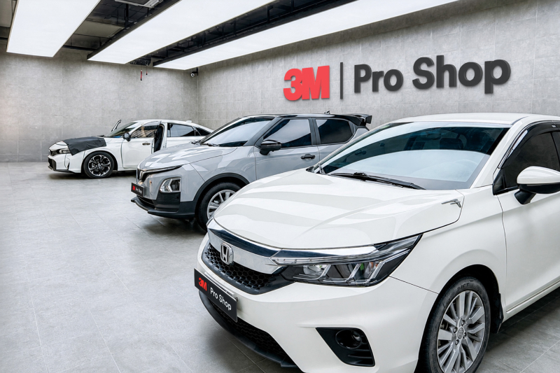
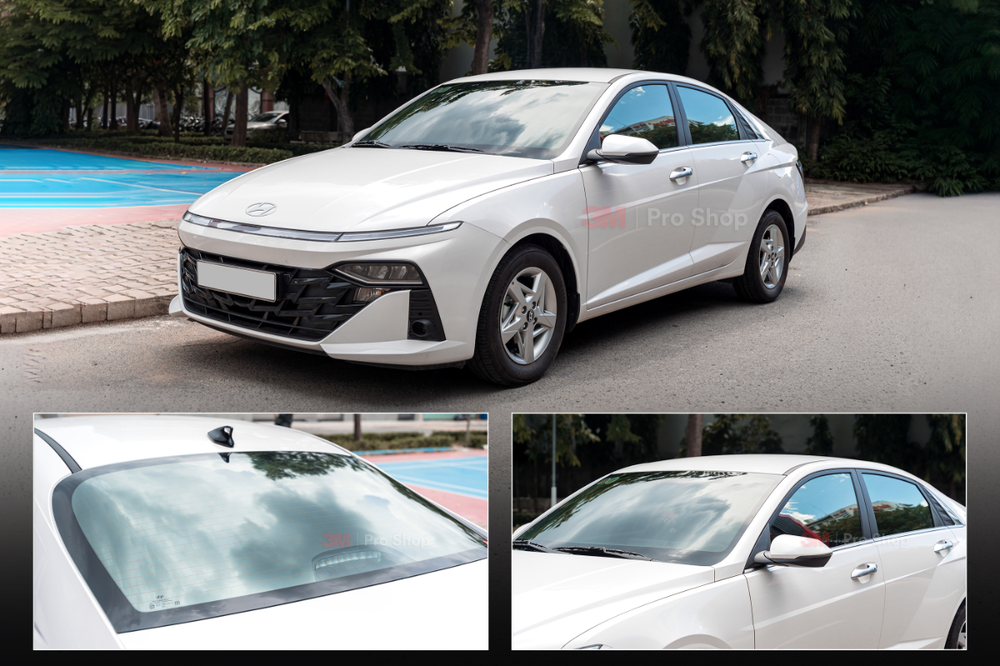
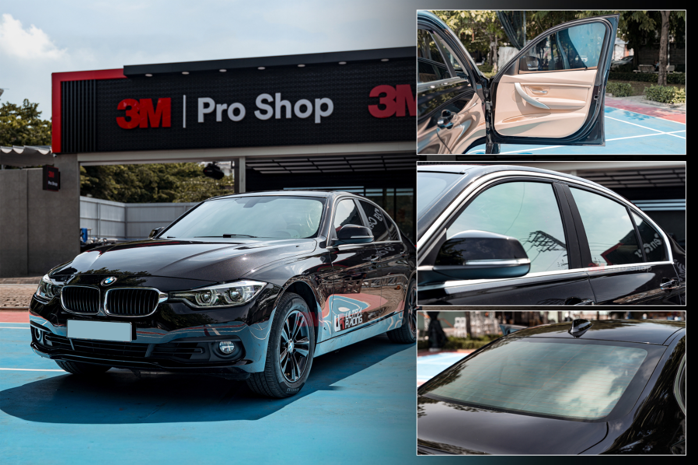
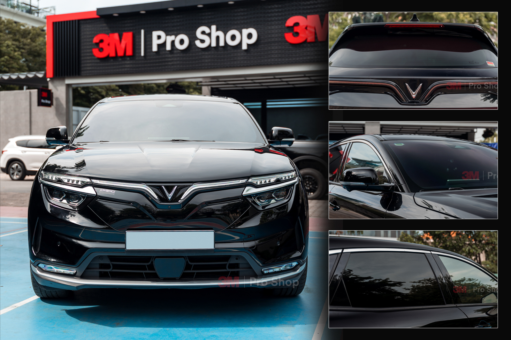
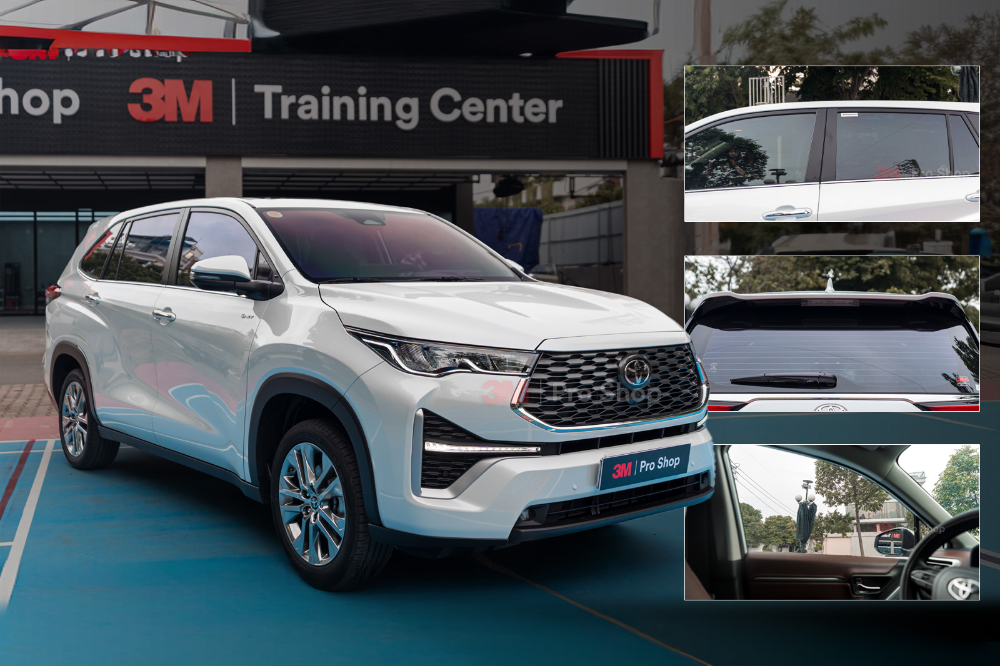

Phim cách nhiệt ô tô: bảng giá, cách chọn và địa chỉ dán uy tín tại Auto365.vn
Phim cách nhiệt ô tô giúp giảm nóng khoang xe, giảm chói, hỗ trợ cản tia UV, tăng sự riêng tư và bảo vệ nội thất khi xe thường xuyên vận hành dưới nắng. Điều quan trọng không chỉ là chọn thương hiệu, mà là chọn đúng mã phim cho từng vị trí kính và đúng nhu cầu sử dụng thực tế.
Trang này tổng hợp cách đọc thông số, cách chọn phim cho kính lái, kính sườn, kính hậu, cửa sổ trời, bảng giá tham khảo và các gói phim 3M đang được Auto365 tư vấn và thi công.
Nếu đang tìm địa chỉ dán phim cách nhiệt ô tô, khách hàng có thể đặt lịch tư vấn để được kiểm tra kính xe, tư vấn mã phim theo từng vị trí kính và hướng dẫn bảo hành điện tử sau thi công.
1. Phim cách nhiệt ô tô là gì?
Phim cách nhiệt ô tô là lớp màng kỹ thuật được cấu tạo từ nhiều lớp vật liệu, thường gồm nền polyester kết hợp công nghệ xử lý bề mặt, lớp phủ kim loại, hạt nano ceramic hoặc cấu trúc quang học tùy từng dòng phim.
Không nên hiểu dán phim cách nhiệt chỉ là “làm tối kính”. Đây là giải pháp kiểm soát nhiệt, ánh sáng, tia UV và độ chói đi vào khoang cabin. Cấu hình phù hợp cần được chọn theo từng vị trí kính như kính lái, kính sườn, kính lưng, cửa sổ trời hoặc panorama, đồng thời đối chiếu TSER, VLT, UVR, IRR, giảm lóa và chính sách bảo hành.
Tóm tắt nhanh
Phim cách nhiệt ô tô là lớp phim dán lên kính xe để hỗ trợ giảm nhiệt, giảm chói, hạn chế tia UV và cải thiện sự riêng tư trong khoang xe. Khi chọn phim, người dùng nên xem đồng thời TSER, VLT, IRR, UVR, độ giảm chói, vị trí kính và nhu cầu sử dụng thực tế. Auto365.vn - Trụ Sở Chính tư vấn phim cách nhiệt theo dòng xe, kính nguyên bản, mã phim, ngân sách và điều kiện vận hành.
8 lợi ích chính khi dán phim cách nhiệt
🌡️ Giảm nóng cabin
Hỗ trợ giảm một phần nhiệt lượng truyền qua kính, giúp khoang xe dịu hơn trong một số điều kiện sử dụng.
☀️ Hỗ trợ cản tia UV
Góp phần cản tia UV ở mức cao tùy mã phim và điều kiện đo, giúp bảo vệ da và mắt người ngồi trong xe. Khách hàng có thể tìm hiểu thêm về cách phim cách nhiệt hỗ trợ hạn chế tia UV.
🕶️ Giảm chói
Hạn chế hiện tượng lóa mắt do ánh nắng mặt trời chiếu trực tiếp hoặc đèn pha của xe đi ngược chiều, mang lại tầm nhìn dịu mắt và an toàn hơn khi lái xe.
🛡️ Tăng riêng tư
Lựa chọn các mã phim có độ truyền sáng (VLT) thấp cho phần kính sườn sau và kính lưng giúp hạn chế ánh nhìn từ bên ngoài, bảo vệ sự riêng tư cho hành khách.
🛋️ Bảo vệ nội thất
Ngăn cản tác động phá hủy của nhiệt độ cao và tia UV, giảm nguy cơ bạc màu, nứt nẻ hoặc phồng rộp các chi tiết nhựa, ghế da và taplo.
❄️ Giảm tải điều hòa
Nhờ khoang lái không bị hấp nhiệt quá mức, hệ thống điều hòa hoạt động hiệu quả hơn, có thể góp phần giảm tải cho hệ thống điều hòa trong một số điều kiện sử dụng.
✨ Tăng thẩm mỹ
Màu sắc phim sang trọng tạo diện mạo liền khối, cứng cáp và thể thao hơn cho tổng thể ngoại thất của chiếc xe.
🚘 Phù hợp nhiều nhóm xe
Giải pháp phim cách nhiệt có thể tùy chỉnh linh hoạt các cấu hình để tối ưu hóa cho từng dòng xe từ sedan, SUV gia đình cho đến xe tải và các dòng xe điện thế hệ mới.
Điều cần hiểu đúng trước khi dán phim
Phim cách nhiệt là một giải pháp hỗ trợ, không thể loại bỏ hoàn toàn cảm giác nóng khi đỗ xe dưới nắng gắt thời gian dài. Việc chọn mã phim phải là sự cân bằng giữa khả năng cản nhiệt, sự riêng tư và đặc biệt là độ truyền sáng (VLT) để đảm bảo tầm nhìn rõ ràng khi lái xe ban đêm hoặc trong điều kiện sương mù. Kính lái nên dùng mã phim sáng, trong khi kính sườn sau hoặc cửa sổ trời panorama có thể dùng mã tối hơn tùy nhu cầu.
Kinh nghiệm trước khi chốt gói
Không nên chỉ dựa vào tên gói dán toàn xe mà bỏ qua thông số chi tiết của từng mã phim. Khách hàng nên yêu cầu xem bảng thông số kỹ thuật hoặc trải nghiệm qua máy test tại cửa hàng. Ngoài ra, hãy xác nhận rõ loại phim (nhuộm màu, tráng phủ kim loại, hay nano ceramic) để ưu tiên các dòng vật liệu hạn chế cản sóng VETC hay tín hiệu điện thoại, đồng thời nắm rõ điều kiện bảo hành điện tử chính hãng.

2. Công nghệ phim, thông số cần biết và bảng thông số catalog
Để chọn phim đúng, khách hàng nên hiểu hai lớp thông tin: công nghệ phim và bộ thông số kỹ thuật. Những chỉ số như TSER, VLT, UVR, IRR, giảm lóa giúp so sánh có cơ sở hơn thay vì chỉ chọn theo màu kính hoặc tên thương hiệu.
| Công nghệ | Đặc điểm | Phù hợp với ai? |
|---|---|---|
| Dyed Film | Chủ yếu dùng lớp nhuộm để tạo màu tối, hỗ trợ tăng riêng tư nhưng hiệu quả nhiệt và độ bền màu thường cần kiểm tra kỹ. | Khách cần chi phí thấp, tăng riêng tư cơ bản. |
| Metalized | Có lớp kim loại hỗ trợ phản xạ năng lượng và kiểm soát nhiệt, nhưng có thể cần kiểm tra khả năng tương thích với thiết bị thu phát trên xe. | Người ưu tiên kiểm soát nhiệt và chấp nhận độ phản xạ tùy dòng. |
| Sputter | Lớp phủ mỏng được xử lý chính xác hơn, thường hướng đến hiệu năng ổn định và thẩm mỹ tốt. | Khách muốn hiệu năng ổn định, cần so sánh theo mã phim cụ thể. |
| Nano Ceramic | Sử dụng vật liệu gốm nano để xử lý nhiệt và ánh sáng, thường được quan tâm nhờ khả năng giảm nóng mà không quá phản gương. | Xe gia đình, xe đi phố, khách muốn ít phản gương và dễ sử dụng. |
| Ceramic Hybrid | Kết hợp công nghệ Nano Ceramic và Nano Reflective, hỗ trợ phản xạ nhiệt trực tiếp, phân tán nhiệt có kiểm soát và giảm hiện tượng kính hấp thụ nhiệt quá nhiều như một số dòng phim truyền thống. | Khách muốn cân bằng giữa chống nóng, giảm chói, độ riêng tư và trải nghiệm sử dụng ổn định. |
| Quang học đa lớp | Nhiều lớp quang học giúp kiểm soát phổ ánh sáng, thường hướng đến kính lái sáng, thẩm mỹ và trải nghiệm cao cấp. | Khách ưu tiên kính lái sáng, thẩm mỹ và trải nghiệm quan sát tốt. |
Nguồn: Catalog 3M | 365Group, áp dụng từ 06/2026 — điều kiện đo kính xanh 6mm, VLT 73%.
Khi chọn phim cách nhiệt, không nên chỉ dựa vào tên công nghệ. Khách hàng cần đối chiếu mã phim cụ thể, vị trí kính và các chỉ số như TSER, VLT, UVR, IRR, giảm lóa trước khi chốt cấu hình.
Phim cách nhiệt hoạt động theo cơ chế nào?
Về cơ bản, phim cách nhiệt kiểm soát nhiệt qua kính theo hai hướng chính: hấp thụ nhiệt và phản xạ nhiệt. Một số dòng phim ưu tiên hấp thụ nhiệt qua vật liệu phim, trong khi một số dòng khác có lớp vật liệu giúp phản xạ một phần năng lượng mặt trời trở lại môi trường.
Không nên đánh giá phim chỉ bằng việc sờ kính nóng hay mát sau khi dán. Có dòng phim làm kính hấp thụ nhiệt nhiều hơn nhưng vẫn giúp khoang xe dễ chịu hơn; cũng có dòng phim phản xạ nhiệt tốt nhưng cần kiểm tra độ phản gương, tầm nhìn và khả năng tương thích với thiết bị trên xe.
Vì vậy, khi chọn phim, khách hàng nên xem đồng thời TSER, VLT, UVR, IRR, giảm lóa, vị trí kính và cảm giác quan sát thực tế.
| Mã phim | TSER | VLT | UVR | Giảm lóa | IRR |
|---|---|---|---|---|---|
| CR BLK 15 | 64% | 14% | 99.9% | 81% | 98% |
| CR BLK 35 | 60% | 33% | 99.9% | 55% | 98% |
| CR BLK 40 | 58% | 48%* | 99.9% | 44% | 98% |
| CR BLK 50 | 56% | 48% | 99.9% | 34% | 98% |
| CR BLK 60 | 54% | 57% | 99.9% | 22% | 97% |
| NR5 | 69% | 7% | 99% | 93% | 91% |
| NR15 | 65% | 14% | 99% | 84% | 86% |
| NR25 | 59% | 29% | 99% | 68% | 86% |
| NR35 | 51% | 43% | 99% | 52% | 79% |
| IR15 | 59% | 18% | 99% | 78% | 90% |
| IR25 | 57% | 30% | 99% | 65% | 90% |
| IR50 | 47% | 58% | 99% | 32% | 83% |
Cách Auto365 đọc và trình bày dữ liệu phim cách nhiệt
Thông số trên trang được trình bày theo tư liệu catalog đang áp dụng, gồm TSER, VLT, UVR, giảm lóa và IRR. Auto365 tách rõ dữ liệu catalog và số đo thực tế sau thi công để khách hàng không nhầm giữa thông số công bố và kết quả đo trên từng xe.
Số đo thực tế có thể thay đổi theo kính nguyên bản, vị trí kính, thiết bị đo, điều kiện ánh sáng và quy trình nghiệm thu tại thời điểm thi công.
Ghi chú kỹ thuật khi đọc bảng thông số phim cách nhiệt
- Điều kiện dữ liệu: Thông số catalog được công bố trên kính xanh 6mm, VLT 73%, chỉ mang tính tham khảo. Số đo thực tế sau khi dán trên xe có thể khác do kính nguyên bản, vị trí kính, thiết bị đo và điều kiện nghiệm thu.
- CR BLK 40: VLT 48% là thông số dựa trên kết quả đo thực tế trên phim tại thị trường Việt Nam theo tư liệu hãng.
- IRR: IRR là chỉ số cản hồng ngoại được công bố trong bảng catalog. Chỉ hiển thị các thông số được công bố trong tư liệu hãng.
- Quy định sử dụng: Quy định về độ truyền sáng và dán phim có thể thay đổi theo khu vực. Khách hàng nên kiểm tra quy định hiện hành và tư vấn theo từng vị trí kính trước khi chốt mã phim.
Góc chuyên gia: đừng chọn phim chỉ bằng một chỉ số
Theo anh Đặng Minh Hoàng – Giám đốc điều hành 3M Pro Shop & 3M Training Center, khi chọn phim cách nhiệt, khách hàng không nên chỉ nhìn vào IRR, độ tối hoặc tên thương hiệu. Một cấu hình phù hợp cần cân bằng giữa VLT, TSER, UVR, giảm lóa và trải nghiệm nhìn qua kính thực tế.
Với kính lái, yếu tố tầm nhìn an toàn nên được ưu tiên trước cảm giác “càng tối càng mát”. Với kính sườn, kính lưng và cửa sổ trời, có thể chọn mã tối hơn tùy nhu cầu riêng tư và chống nóng.
3. Cách chọn phim cách nhiệt phù hợp cho từng xe
Một cấu hình phim tốt nên dựa vào chọn mã 3M Crystalline CR BLK theo từng vị trí kính, nhóm xe và thói quen sử dụng. Kính lái, kính sườn, kính hậu và cửa sổ trời không nên chọn cùng một tiêu chí, vì mỗi vị trí ảnh hưởng khác nhau đến tầm nhìn, nhiệt cabin, độ riêng tư và trải nghiệm hành khách.
| Vị trí kính | Ưu tiên khi chọn | Gợi ý mã phim tham khảo | Lưu ý khi chốt cấu hình |
|---|---|---|---|
| Kính lái | Độ truyền sáng phù hợp, dễ quan sát ban đêm, giảm chói vừa phải, TSER tốt. | CR BLK 60 / CR BLK 50 / CR BLK 40; NR35 / NR25; IR50. | Nên xem mẫu thật trên xe hoặc kính mẫu, cân nhắc kính nguyên bản, thói quen đi đêm và điều kiện sử dụng. |
| Kính sườn trước | Quan sát gương, giảm nắng ngang, vẫn đủ sáng khi đi đường thiếu sáng. | CR BLK 50 / CR BLK 40 / CR BLK 35; NR25 / NR15; IR25. | Nên tránh chọn quá tối nếu xe thường đi đêm, đi đường tỉnh hoặc cần quan sát gương liên tục. |
| Kính sườn sau | Riêng tư, giảm chói khoang sau, hỗ trợ bảo vệ hành khách. | CR BLK 35 / CR BLK 15; NR15 / NR5; IR25 / IR15. | Có thể chọn mã tối hơn kính lái, nhưng vẫn nên kiểm tra cảm giác nhìn từ bên trong ra ngoài. |
| Kính lưng | Giảm nắng phía sau, riêng tư, được thiết kế để hạn chế ảnh hưởng quá nhiều đến camera/gương hậu. | CR BLK 35 / CR BLK 15; NR15 / NR5; IR25 / IR15. | Cần cân nhắc camera lùi, gương chiếu hậu điện tử, phim cũ còn lại và thói quen di chuyển ban đêm. |
| Cửa sổ trời nhỏ | Giảm nóng đỉnh đầu, vẫn giữ cảm giác thoáng nếu chủ xe cần ánh sáng tự nhiên. | CR BLK 35 / CR BLK 15; NR15 / NR5. | Giá thường tham chiếu như một ô kính sườn theo catalog, nhưng vẫn cần kiểm tra kích thước thực tế. |
| Kính trần panorama | Kiểm soát nhiệt từ phía trên, diện tích kính lớn, phối với rèm che và điều hòa. | CR BLK 35 / CR BLK 15; NR15 / NR5 tùy nhu cầu riêng tư và mức nóng thực tế. | Không nên áp máy móc như kính sườn nhỏ; panorama lớn thường cần tư vấn riêng theo diện tích và dòng xe. |
Lưu ý: bảng trên là gợi ý tham khảo theo catalog 3M/365Group và kinh nghiệm tư vấn vị trí kính. Cấu hình cuối cùng nên được xác nhận theo dòng xe, kính nguyên bản, nhu cầu đi đêm, thiết bị gắn trên kính và chính sách tại thời điểm thi công.
Nếu đang cân nhắc nhóm Ceramic NR, khách hàng có thể xem thêm hướng dẫn cách phối phim 3M Ceramic NR theo từng vị trí kính để có góc nhìn tổng thể. Ngoài ra, việc quyết định nên chọn NR35, NR25, NR15 hay NR5 cũng phụ thuộc nhiều vào nhu cầu thực tế. Khách hàng cũng nên chú ý bài tư vấn NR35 hay NR25 cho kính lái để đảm bảo tầm nhìn an toàn khi lái đêm.

Ý kiến chuyên môn từ Auto365
Với kính lái, yếu tố quan trọng nhất không phải là chọn mã phim tối nhất mà là giữ tầm nhìn ổn định trong nhiều điều kiện: nắng gắt, trời mưa, đi đêm và ra vào hầm. Với kính sườn sau, kính lưng và cửa sổ trời, chủ xe có thể ưu tiên riêng tư và giảm chói nhiều hơn, nhưng vẫn cần kiểm tra cảm giác quan sát thực tế sau khi phối phim.
Đội ngũ Auto365 thường tư vấn theo nguyên tắc: kính lái sáng và dễ nhìn, khoang sau dịu nắng hơn, cửa sổ trời tư vấn riêng, còn xe điện hoặc xe nhiều thiết bị cần xem thêm vị trí gắn VETC, camera hành trình, GPS và cấu tạo kính.
Chọn theo nhu cầu sử dụng thực tế
Xe gia đình
Ưu tiên kính lái dễ quan sát, khoang sau dịu nắng, khả năng hạn chế UV và bảo hành rõ ràng. Nếu có trẻ nhỏ hoặc người lớn tuổi, nên xem kỹ cảm giác hàng ghế sau sau khi phối phim.
Xe dịch vụ
Cần cấu hình ổn định, chi phí hợp lý, dễ bảo hành và không làm nhiều nhóm khách khó chịu. Kính lái và kính sườn trước không nên quá tối để tài xế quan sát tốt.
Xe điện, xe nhiều kính
Xe điện thường có diện tích kính lớn, có thể có kính trần toàn cảnh và nhiều thiết bị điện tử. 3M Ceramic NR thuộc nhóm Ceramic Hybrid. Khi tư vấn, cần đối chiếu mã phim, vị trí kính, nhu cầu sử dụng và điều kiện bảo hành áp dụng.
Xe bán tải
Bán tải thường cần cân bằng giữa kính lái sáng, kính sườn chống nắng ngang và khoang sau đủ riêng tư. Với xe hay đi công trình hoặc đi tỉnh, nên ưu tiên độ bền, dễ chăm sóc và tầm nhìn khi đi đêm.
Xe tải, xe van, xe giao hàng
Nhóm xe này thường chạy nhiều giờ, đỗ nắng và cần quan sát gương liên tục. Kính lái và kính sườn trước nên được tư vấn kỹ theo tầm nhìn, nhiệt cabin và đặc thù vận hành.
Xe khách, limousine, minibus
Diện tích kính lớn khiến trải nghiệm hành khách bị ảnh hưởng nhiều bởi nắng ngang và nhiệt cabin. Nên tư vấn theo từng khoang kính, mức riêng tư, điều hòa và thời gian xe vận hành trong ngày.
Những sai lầm thường gặp khi chọn phim
Không chắc xe của anh nên chọn cấu hình nào?
Gửi dòng xe, thói quen sử dụng và ngân sách dự kiến, Auto365 sẽ tư vấn theo kính lái, kính sườn, kính hậu và cửa sổ trời thay vì chọn một mã phim cho toàn bộ xe.
Case thực tế và nhóm xe tư vấn tại Auto365
Tại Auto365, cấu hình phim được tối ưu hóa theo nhóm xe và thói quen sử dụng, giúp khách hàng chọn đúng mã phim cho kính lái, kính sườn, kính lưng và cửa sổ trời.
Case thi công thực tế theo từng nhóm xe
Auto365 ghi nhận cấu hình phim cách nhiệt theo từng dòng xe, vị trí kính và nhu cầu sử dụng thực tế. Các case dưới đây giúp khách hàng tham khảo cách phối phim cho sedan, xe điện, SUV, MPV, xe gia đình và xe có kính lái cần độ sáng phù hợp.
| Nhóm xe | Case tham khảo | Điểm đáng chú ý | Phù hợp với nhu cầu |
|---|---|---|---|
| Sedan phổ thông | Hyundai Accent 2025 dán 3M Ceramic NR | Tham khảo cấu hình Ceramic NR cho xe sedan sử dụng hằng ngày. | Đi phố, gia đình, chi phí dễ tiếp cận. |
| Xe điện đô thị | VinFast VF3 dán 3M Ceramic NR | Gợi ý phối phim cho xe điện nhỏ, diện tích kính thực tế và nhu cầu chống nóng đô thị. | Xe điện, xe nhỏ, đi phố nhiều. |
| Sedan cao cấp | BMW 320i dán 3M Ceramic NR | Tham khảo cách phối phim Ceramic NR cho sedan cao cấp. | Xe sedan cao cấp, cần giảm chói nhưng vẫn giữ tầm nhìn. |
| SUV gia đình | Honda CR-V dán 3M Crystalline CR BLK Pro | Tham khảo cấu hình cao cấp cho SUV gia đình, khoang kính lớn. | Gia đình, đi xa, cần kính lái dễ quan sát. |
| SUV 7 chỗ / dịch vụ | Toyota Fortuner dán 3M Crystalline CR BLK Pro | Tham khảo cấu hình CR BLK Pro cho xe 7 chỗ, khoang kính rộng. | Xe 7 chỗ, đi tỉnh, gia đình hoặc dịch vụ. |
| SUV nhiều kính | Ford Everest dán 3M Crystalline CR BLK | Tham khảo cách chọn phim cho SUV cỡ lớn, diện tích kính rộng. | SUV gia đình, đường dài, cần giảm nắng khoang sau. |
| MPV gia đình | Kia Carens dán kính lái CR BLK 50 | Tập trung vào lựa chọn mã kính lái sáng, dễ quan sát cho xe gia đình. | MPV, gia đình, ưu tiên tầm nhìn kính lái. |
| Kính lái sedan/CUV | Honda Civic dán kính lái CR BLK 40 | Case tập trung vào lựa chọn mã kính lái CR BLK 40. | Người cần kính lái cân bằng giữa giảm chói và tầm nhìn. |
Xem thêm case thi công: Mazda CX-5 dán kính lái CR BLK 40, Porsche Panamera dán 3M Ceramic NR, VinFast VF3 dán 3M Crystalline Hybrid Pro.
Hình ảnh case dán phim cách nhiệt thực tế tại Auto365
Các case thực tế giúp khách hàng hình dung độ sáng, độ riêng tư và thẩm mỹ của phim sau khi lên từng nhóm xe khác nhau.



Checklist trước khi dán phim cách nhiệt
Trước khi chốt lịch thi công, khách hàng nên xác nhận lại các thông tin dưới đây để hạn chế chọn sai mã phim hoặc nhầm điều kiện bảo hành.
| Thông tin cần xác nhận | Gợi ý kiểm tra |
|---|---|
| Mã phim kính lái | Hỏi rõ mã phim, độ truyền sáng và cảm giác quan sát khi đi đêm. |
| Mã phim kính sườn trước | Kiểm tra khả năng quan sát gương, giảm chói ngang và độ riêng tư. |
| Mã phim kính sườn sau/kính lưng | Xác nhận nhu cầu riêng tư, giảm nắng khoang sau và khả năng quan sát từ trong ra ngoài. |
| Cửa sổ trời hoặc panorama | Nếu xe có kính nóc, cần hỏi rõ mã phim riêng cho khu vực này. |
| Tình trạng phim cũ | Nếu xe đã dán phim, cần kiểm tra bong mép, bọt khí, phai màu hoặc cản tầm nhìn. |
| Bảo hành | Xác nhận thời hạn, điều kiện áp dụng và cách tra cứu bảo hành điện tử nếu có. |
| Thời gian thi công | Hỏi thời gian dán, thời gian khô phim và các lưu ý sau khi nhận xe. |
Chọn phim cách nhiệt theo vị trí kính
Mỗi vị trí kính trên ô tô có yêu cầu khác nhau về tầm nhìn, độ riêng tư, giảm chói và khả năng kiểm soát nhiệt. Vì vậy, không nên chọn cùng một mã phim cho toàn bộ xe nếu chưa được tư vấn theo nhu cầu sử dụng thực tế.
| Vị trí kính | Ưu tiên khi chọn phim | Lưu ý |
|---|---|---|
| Kính lái | VLT cao, tầm nhìn rõ, giảm chói vừa phải | Không chọn quá tối; tư vấn theo kính nguyên bản và điều kiện lái đêm |
| Kính sườn trước | Cân bằng riêng tư, tầm nhìn gương, giảm nóng | Tránh mã quá tối nếu thường đi đêm hoặc trời mưa |
| Kính sườn sau | Ưu tiên riêng tư và giảm nóng | Có thể chọn mã tối hơn kính trước |
| Kính lưng | Giảm nóng, giảm chói từ sau xe | Cần kiểm tra camera hoặc gương chiếu hậu |
| Cửa sổ trời | Ưu tiên kiểm soát nhiệt | Giá theo diện tích thực tế |
4. Bảng giá phim cách nhiệt và các gói 3M tại Auto365
Giá phim cách nhiệt phụ thuộc vào dòng phim, phân khúc xe, diện tích kính, cửa sổ trời, tình trạng phim cũ và cấu hình từng vị trí kính. Tham khảo bảng giá phim cách nhiệt 3M cập nhật dưới đây được trình bày theo catalog 3M/365Group để khách hàng có điểm tham khảo trước khi tư vấn chi tiết.
Bảo hành phim cách nhiệt 3M
Theo catalog 3M | 365Group áp dụng từ 06/2026, phim cách nhiệt 3M được bảo hành chính hãng 10 năm theo điều kiện áp dụng khi đã dán trên xe và được kích hoạt bảo hành điện tử 3M. Khách hàng kiểm tra mã phim, vị trí dán, thông tin gói và tra cứu bảo hành điện tử tại thời điểm bàn giao xe.
Lưu ý giá: Bảng giá dưới đây là giá tham khảo tại Auto365 theo catalog 3M | 365Group áp dụng từ 06/2026, không đại diện cho toàn bộ thị trường phim cách nhiệt. Giá thực tế cần được xác nhận theo dòng xe, diện tích kính, tình trạng phim cũ, cửa sổ trời và chính sách áp dụng tại thời điểm tư vấn.
| Gói phim 3M | Minicar | Sedan | SUV | Cấu hình chính theo catalog |
|---|---|---|---|---|
| 3M Ceramic Hybrid / Ceramic NR | 5.900.000đ | 7.900.000đ | 9.500.000đ | Kính lái NR35/NR25; kính sườn và kính lưng NR25/NR15/NR5. |
| 3M Ceramic IR | 7.200.000đ | 9.000.000đ | 10.500.000đ | Kính lái IR50; kính sườn và kính lưng IR25/IR15. |
| 3M Crystalline Hybrid | 9.000.000đ | 10.800.000đ | 12.500.000đ | Kính lái CR BLK 50/60; kính sườn và kính lưng NR25/NR15/NR5. |
| 3M Crystalline Hybrid PRO | 9.800.000đ | 11.600.000đ | 13.300.000đ | Kính lái CR BLK 40; kính sườn và kính lưng NR25/NR15/NR5. |
| 3M Crystalline CR BLK | 12.200.000đ | 14.800.000đ | 17.600.000đ | Kính lái CR BLK 50/60; kính sườn và kính lưng CR BLK 15/35. |
| 3M Crystalline CR BLK PRO | 12.900.000đ | 15.500.000đ | 18.300.000đ | Kính lái CR BLK 40; kính sườn và kính lưng CR BLK 15/35. |
Áp dụng từ 06/2026 đến khi có
thông báo mới.
Nhóm minicar tham khảo theo catalog gồm VinFast VF 3, Wuling Hongguang Mini EV, Bestune
Xiaoma, VinFast Minio Green và xe cùng kích thước.
Khách hàng muốn thi công nhóm Ceramic Hybrid/Ceramic NR có thể tham khảo thêm địa chỉ dán phim 3M Ceramic Hybrid chính hãng trước khi đặt lịch.
| Vị trí kính | Mức giá tham khảo | Cách hiểu khi tư vấn |
|---|---|---|
| Kính lái | từ 2.600.000đ đến 6.500.000đ | Giá thay đổi theo dòng phim được chọn cho kính lái. Kính lái cần ưu tiên độ truyền sáng, giảm chói hợp lý và tầm nhìn an toàn. |
| Kính sườn | từ 1.700.000đ đến 2.600.000đ | Phù hợp khi chỉ cần xử lý nắng ngang, tăng riêng tư hoặc thay phim cũ ở một số cửa kính. |
| Kính lưng | từ 1.900.000đ đến 4.100.000đ | Giá thay đổi theo dòng phim và diện tích kính lưng. Cần cân nhắc camera lùi, gương chiếu hậu và thói quen đi đêm. |
| Cửa sổ trời nhỏ | từ 850.000đ | từ 850.000đ — giá tham khảo theo diện tích thực tế, tính theo quy tắc 1/2 hàng kính sườn trong bảng dán lẻ. |
| Cửa sổ trời panorama | từ 2.600.000đ | Panorama có diện tích lớn, nhận nắng trực diện và cần tư vấn riêng theo kích thước kính, rèm che và nhu cầu sử dụng (giá thường tính tương đương kính lái). |
3M Ceramic Hybrid / Ceramic NR
Gói dễ tiếp cận, tham khảo giá phim 3M Ceramic NR cho sedan phù hợp khách cần cấu hình thực dụng, nhiều mã NR để phối theo kính. 3M Ceramic NR thuộc nhóm Ceramic Hybrid. Khi tư vấn, cần đối chiếu mã phim, vị trí kính, nhu cầu sử dụng và điều kiện bảo hành áp dụng.
3M Ceramic IR
Nhóm ceramic dễ dùng, phù hợp khách muốn cấu hình gọn, tông kính trung tính và giá nằm giữa Ceramic NR và nhóm Crystalline.
3M Crystalline Hybrid
Gói phối kính lái CR BLK với kính sườn/kính lưng NR, phù hợp khách muốn nâng cấp kính lái nhưng vẫn giữ ngân sách hợp lý.
3M Crystalline Hybrid PRO
Cấu hình dùng CR BLK 40 ở kính lái, hướng tới khách cần kính lái cao cấp hơn và khoang sau dùng NR theo vị trí kính.
3M Crystalline CR BLK
giá dán phim 3M Crystalline CR BLK thường áp dụng cho nhiều vị trí kính, phù hợp khách ưu tiên thẩm mỹ đen xám, tầm nhìn cao cấp và trải nghiệm đồng bộ hơn.
3M Crystalline CR BLK PRO
Gói cao hơn trong nhóm CR BLK, dùng CR BLK 40 cho kính lái và CR BLK 15/35 cho kính sườn, kính lưng theo catalog.
Lưu ý: giá thực tế cần được xác nhận theo dòng xe, kích thước kính, tình trạng phim cũ, cửa sổ trời và chính sách áp dụng tại thời điểm tư vấn. Bảng giá dán lẻ phía trên chỉ chia theo vị trí kính để khách hàng dễ hiểu, không chia theo từng gói nhằm tránh làm mục giá quá rối.
5. Các thương hiệu phim cách nhiệt phổ biến tại Việt Nam
Thị trường phim cách nhiệt Việt Nam có nhiều thương hiệu ở nhiều phân khúc. Khi chọn phim cách nhiệt, khách hàng nên xem mã phim, thông số, bảo hành, nguồn gốc sản phẩm và tay nghề thi công thay vì chọn chỉ theo logo hoặc tên thương hiệu.
3M
Một trong những lựa chọn thường được nhắc đến, phim cách nhiệt 3M được phát triển với nhiều công nghệ đa dạng phục vụ các nhu cầu khác nhau.
V-KOOL
Được nhiều người dùng quan tâm, phim cách nhiệt V-KOOL có thiết kế tập trung vào khả năng phản xạ nhiệt độ từ ánh nắng.
LLumar
Là thương hiệu phổ biến, phim cách nhiệt LLumar cung cấp nhiều dòng sản phẩm có thể đáp ứng đa dạng yêu cầu của người dùng.
SunTek
SunTek là một trong các thương hiệu phim cách nhiệt được người dùng tại Việt Nam tham khảo. Khi so sánh, nên xem mã phim cụ thể, thông số công bố và chính sách bảo hành.
XPEL
Bên cạnh sản phẩm bảo vệ sơn, phim cách nhiệt XPEL cũng là một lựa chọn phù hợp khách muốn tham khảo.
Solar Gard
Solar Gard là một trong các thương hiệu phim cách nhiệt được người dùng tại Việt Nam tham khảo. Khi so sánh, nên xem mã phim cụ thể, thông số công bố và chính sách bảo hành.
Huper Optik
Được biết đến với công nghệ gốm, phim cách nhiệt Huper Optik cung cấp thêm giải pháp cách nhiệt.
Johnson Window Films
Sản phẩm phim cách nhiệt Johnson Window Films mang đến những lựa chọn phim có bề dày phát triển lâu năm.
Rayno
Thương hiệu phim cách nhiệt Rayno có các dòng sản phẩm tập trung vào sự kết hợp giữa các công nghệ màng phim.
NanoX
Với công nghệ nano ceramic, phim cách nhiệt NanoX cung cấp các giải pháp dán kính được thiết kế để hỗ trợ giảm nhiệt.
Classis
Là một cái tên quen thuộc, phim cách nhiệt Classis mang lại nhiều dòng phim đa dạng.
Ntech
Ntech là một trong các thương hiệu phim cách nhiệt được người dùng tại Việt Nam tham khảo. Khi so sánh, nên xem mã phim cụ thể, thông số công bố và chính sách bảo hành.
Ceramax
Sản phẩm phim cách nhiệt Ceramax tập trung vào thành phần men gốm hỗ trợ cản nhiệt.
Inmax
Được định hình với công nghệ phản xạ nhiệt, phim cách nhiệt Inmax cung cấp góc nhìn mới trong trải nghiệm.
Cool N Lite
Cool N Lite là một trong các thương hiệu phim cách nhiệt được người dùng tại Việt Nam tham khảo. Khi so sánh, nên xem mã phim cụ thể, thông số công bố và chính sách bảo hành.
Các thương hiệu khác
Ngoài ra còn có nhiều thương hiệu phim cách nhiệt khác đang được cung cấp tại Việt Nam, người dùng nên đối chiếu thêm mã phim và thông số trước khi quyết định.
Không nên chọn phim cách nhiệt chỉ theo thương hiệu
Trên thị trường có nhiều thương hiệu phim cách nhiệt ô tô như 3M, V-Kool, XPEL, Llumar, Ntech, Inmax, Rayno, NanoX hoặc một số dòng phim theo từng phân khúc riêng. Mỗi thương hiệu thường có nhiều dòng sản phẩm, nhiều mã phim và nhiều mức giá khác nhau.
Vì vậy, khi so sánh phim cách nhiệt, khách hàng không nên chỉ hỏi “hãng nào tốt hơn”, mà nên hỏi rõ: kính lái dùng mã nào, kính sườn dùng mã nào, kính lưng dùng mã nào, thông số TSER/VLT/UVR/IRR ra sao, có ảnh hưởng đến tầm nhìn hay thiết bị trên xe không và chính sách bảo hành được kích hoạt thế nào.
Một cấu hình phù hợp không nhất thiết là cấu hình đắt nhất, mà là cấu hình cân bằng giữa tầm nhìn, khả năng giảm nóng, độ riêng tư, ngân sách và thói quen sử dụng xe.
| Thương hiệu/nhóm phim | Điểm thường được quan tâm | Lưu ý khi chọn |
|---|---|---|
| 3M | Đa dạng dòng phim, có các nhóm như Crystalline, Ceramic, Ceramic Hybrid và chính sách bảo hành tùy dòng. | Cần hỏi rõ mã phim cho kính lái, kính sườn, kính lưng và điều kiện bảo hành áp dụng. |
| V-Kool | V-Kool là một trong các thương hiệu phim cách nhiệt được người dùng tại Việt Nam tham khảo. Khi so sánh, nên xem mã phim cụ thể, thông số công bố, trải nghiệm quan sát và chính sách bảo hành. | Nên kiểm tra độ phản gương, tầm nhìn và khả năng tương thích với thiết bị thu phát trên xe. |
| XPEL | XPEL là một trong các thương hiệu được người dùng tại Việt Nam tham khảo ở nhóm PPF và phim cách nhiệt. Khi so sánh, nên xem mã phim cụ thể, thông số công bố và chính sách bảo hành. | Cần đối chiếu mã phim cụ thể, thông số và chính sách bảo hành tại điểm thi công. |
| Llumar | Là thương hiệu phim cách nhiệt phổ biến lâu năm trên thị trường. | Nên so sánh theo dòng phim/mã phim cụ thể thay vì chỉ theo tên thương hiệu. |
| Ntech, Inmax, Rayno, NanoX và các nhóm phim khác | Xuất hiện ở nhiều phân khúc giá, từ cơ bản đến cao cấp tùy dòng phim. | Cần kiểm tra nguồn gốc, thông số, độ bền màu, bảo hành và trải nghiệm nhìn qua kính thật. |
Cách Auto365 tư vấn phim cách nhiệt khác gì?
Thay vì chỉ tư vấn theo tên gói hoặc tên thương hiệu, Auto365 ưu tiên tư vấn theo từng vị trí kính và nhu cầu sử dụng thực tế. Kính lái cần tiêu chí khác kính sườn, kính lưng hoặc cửa sổ trời. Xe đô thị, sedan, SUV, MPV, xe điện và xe có kính trần toàn cảnh cũng không nên dùng một cấu hình giống nhau.
Khi tư vấn, kỹ thuật viên cần làm rõ mã phim cho từng vị trí kính, thông số cơ bản, khả năng quan sát, nhu cầu riêng tư, tình trạng phim cũ nếu có và điều kiện bảo hành. Cách tiếp cận này giúp khách hàng hiểu mình đang chọn mã phim nào, vì sao chọn mã đó và cần kiểm tra gì sau khi thi công.
6. Kiểm tra phim chính hãng và các tình huống cần tư vấn kỹ
Trước khi dán hoặc thay phim, khách hàng nên kiểm tra thông tin gói phim, mã phim từng vị trí và các yếu tố đặc thù của xe. Điều này giúp tránh chọn nhầm cấu hình, đặc biệt với kính lái, xe điện, xe có kính trần, xe dịch vụ hoặc xe đã dán phim cũ.
Cách kiểm tra sau khi dán
Để đảm bảo chất lượng thi công và quyền lợi lâu dài, khách hàng nên thực hiện các bước nghiệm thu cơ bản ngay tại xưởng trước khi nhận xe:
Thông số catalog và số đo thực tế
Thông số catalog phản ánh hiệu suất tấm phim ở điều kiện tiêu chuẩn. Tuy nhiên, số đo thực tế sau dán thường có sự chênh lệch bởi các yếu tố cộng gộp:
Hướng dẫn nhanh cách xác thực phim 3M thật - giả
Muốn kiểm tra phim, mã phim và bảo hành 3M trước khi thi công?
Khách hàng có thể đặt lịch tại Auto365 hoặc 3M Pro Shop để được tư vấn mã phim theo kính lái, kính sườn, kính lưng, đo kiểm thông số nếu cần và hướng dẫn bảo hành điện tử sau khi hoàn thiện.
Những tình huống nên tư vấn kỹ trước khi dán phim
Phim ngả màu, bong mép, nổi bọt khí, kính bị lóa hoặc không rõ mã phim cần kiểm tra trước khi dán lại. Xem thêm hướng dẫn xử lý khi phim cách nhiệt ô tô bị bong tróc.
Nên chọn cấu hình ngay từ đầu để đồng bộ thẩm mỹ, bảo hành và trải nghiệm cabin.
Diện tích kính lớn, nhận nắng từ trên xuống và thường cần mã phim riêng theo kích thước kính.
Lưu ý vị trí VETC, GPS tránh cản sóng. Khách hàng có thể tham khảo xe điện có nên dán 3M Ceramic NR không để chốt vật liệu, và xem qua case VinFast VF3 dán phim 3M Ceramic Hybrid để dễ hình dung.
Thường đi tỉnh, đi công trình hoặc đỗ nắng lâu; cần cân bằng độ bền, tầm nhìn và riêng tư.
Tài xế ngồi lâu, cần giảm nắng ngang nhưng vẫn phải quan sát gương và điểm mù tốt.
Kính lớn, nhiều hành khách, cần giảm chói khoang sau và giữ cảm giác dễ chịu trên hành trình dài.
Nên tư vấn theo từng khoang kính, điều hòa, lịch vận hành và mức riêng tư cần thiết.
Diện tích kính lớn, vận hành nhiều giờ; cần chú ý độ bền, vệ sinh và khả năng bảo trì sau dán.
Kính lái và kính sườn trước cần giữ độ sáng phù hợp để quan sát an toàn hơn.
Nên ưu tiên giảm chói, hạn chế UV, khoang sau dịu nắng và chính sách bảo hành rõ ràng.
Cần kiểm tra độ đồng màu giữa phim mới và phim cũ, đặc biệt khi chỉ thay kính lái hoặc cửa sổ trời.
Cách test phim cách nhiệt trước khi dán
Trước khi chốt cấu hình phim cách nhiệt, khách hàng nên xem mẫu phim trực tiếp và kiểm tra theo nhiều tiêu chí thay vì chỉ dựa vào màu phim hoặc cảm giác khi đặt tay sau đèn nhiệt. Một bài test bằng đèn nhiệt có thể giúp so sánh cảm giác nóng ban đầu giữa các mẫu phim, nhưng chưa phản ánh đầy đủ hiệu quả thực tế sau khi dán lên toàn bộ xe.
Khi test phim, nên kiểm tra đồng thời 6 yếu tố: độ sáng khi nhìn xuyên qua phim, cảm giác giảm nóng trong cùng điều kiện test, mức độ giảm chói, màu phim khi đặt lên kính thật, mã phim được tư vấn cho từng vị trí kính và chính sách bảo hành sau thi công. Với kính lái, yếu tố quan trọng nhất vẫn là tầm nhìn an toàn khi đi ban ngày, ban đêm, trời mưa hoặc ra vào hầm.
Tại Auto365, bước kiểm tra và tư vấn cấu hình phim nên được thực hiện theo xe thật, vì màu kính nguyên bản, diện tích kính, cửa sổ trời, thói quen đi đêm và nhu cầu riêng tư của mỗi chủ xe có thể khác nhau. Cách test đúng không chỉ giúp chọn phim mát hơn, mà còn giúp hạn chế chọn nhầm mã phim hoặc chọn phim quá tối cho kính lái.
| Hạng mục kiểm tra | Cách test tại cửa hàng | Ý nghĩa khi chọn phim |
|---|---|---|
| Độ sáng / VLT | Nhìn xuyên qua mẫu phim hoặc đặt mẫu lên kính thật. | Giúp chọn đúng mã cho kính lái, tránh quá tối. |
| Cảm giác giảm nóng | So sánh dưới cùng nguồn đèn nhiệt, cùng khoảng cách. | Giúp cảm nhận khác biệt ban đầu giữa các mã phim. |
| Giảm chói | Soi dưới nguồn sáng mạnh. | Hữu ích với xe thường đi nắng gắt, cao tốc. |
| Màu phim sau khi lên xe | Đặt mẫu phim lên kính nguyên bản. | Vì kính zin có thể làm màu phim thay đổi. |
| Mã phim từng vị trí | Đối chiếu kính lái, sườn, lưng, cửa sổ trời. | Tránh nhầm gói phim với mã phim cụ thể. |
| Bảo hành | Kiểm tra thời hạn, điều kiện, cách kích hoạt. | Xác nhận quyền lợi sau thi công. |
Chuyên gia khuyến nghị: test phim cần đúng cách
Theo anh Đặng Minh Hoàng, test phim bằng đèn nhiệt chỉ nên xem là bước tham khảo ban đầu. Cách test này giúp so sánh cảm giác nóng giữa các mẫu phim, nhưng chưa phản ánh đầy đủ hiệu quả sau khi dán lên toàn bộ xe.
Khi test phim, khách hàng nên kiểm tra thêm độ sáng, giảm chói, màu phim trên kính thật, mã phim từng vị trí và điều kiện bảo hành. Với kính lái, tầm nhìn an toàn luôn quan trọng hơn việc chọn phim thật tối.
Xe đang nóng hơn, lóa hơn hoặc phim đã ngả màu?
Auto365 có thể kiểm tra tình trạng phim cũ, tư vấn nên thay từng vị trí hay dán lại toàn bộ xe, đồng thời giải thích rõ mã phim và điều kiện bảo hành.
7. Quy trình dán phim cách nhiệt, bảo hành và địa chỉ thi công tại Auto365
Auto365.vn - Trụ Sở Chính là điểm tư vấn, thi công, nghiệm thu và hỗ trợ khách hàng thuộc hệ thống Auto365 trong hệ sinh thái 365Group.
Bảo hành điện tử và quy trình nghiệm thu
📌 LƯU Ý BẢO HÀNH CHÍNH HÃNG
Theo catalog 3M | 365Group áp dụng từ 06/2026, phim cách nhiệt 3M được bảo hành chính hãng 10 năm theo điều kiện áp dụng khi đã dán trên xe và được kích hoạt bảo hành điện tử 3M. Khách hàng kiểm tra mã phim, vị trí dán, thông tin gói và tra cứu bảo hành điện tử tại thời điểm bàn giao xe.
- Thông tin bảo hành: Đối chiếu mã phim ở kính lái, kính sườn, kính lưng, thông tin xe, thời hạn bảo hành và phiếu/tem xác nhận nếu có.
- Chất lượng thi công: Kiểm tra bề mặt phim, mép phim, tình trạng bọt nước/bụi và kết quả đo kiểm nếu có.
Địa chỉ dán phim cách nhiệt uy tín tại Auto365
Khi cần dán phim cách nhiệt ô tô, chủ xe nên ưu tiên đơn vị có quy trình tư vấn rõ ràng, đo kiểm thông số, kỹ thuật viên thi công thực tế và hỗ trợ kiểm tra bảo hành điện tử nếu sử dụng các dòng phim có chính sách bảo hành áp dụng. Tại Auto365, khách hàng có thể được tư vấn cấu hình phim theo từng vị trí kính, nhu cầu sử dụng và ngân sách dự kiến trước khi thi công.
Auto365.vn
Hệ thống nâng cấp xe chuyên nghiệp, hỗ trợ tư vấn và thi công phim cách nhiệt ô tô theo từng dòng xe, vị trí kính và nhu cầu sử dụng thực tế.
3M Pro Shop & 3M Training Center
Trung tâm thi công và đào tạo kỹ thuật phim cách nhiệt 3M, hỗ trợ tư vấn mã phim, quy trình thi công và kiểm tra thông tin bảo hành theo điều kiện áp dụng.


Hướng dẫn nhanh cách xác thực phim 3M thật - giả
- Kích hoạt và đối chiếu bảo hành điện tử.
- Đối chiếu mã phim theo từng vị trí kính.
- Đo kiểm hiệu năng thực tế nếu có.

Checklist nghiệm thu sau khi dán phim cách nhiệt
Sau khi thi công, khách hàng nên kiểm tra lại từng vị trí kính, mã phim và thông tin bảo hành để đảm bảo cấu hình đúng với tư vấn ban đầu.
| Hạng mục nghiệm thu | Cần kiểm |
|---|---|
| Mã phim | Đúng mã đã tư vấn theo từng vị trí kính |
| Bề mặt kính | Không bụi lớn, không xước, không bong mép |
| Mép phim | Cắt gọn, không hở bất thường |
| Tầm nhìn | Kính lái và kính sườn trước rõ trong điều kiện thực tế |
| Bảo hành | Có thông tin kích hoạt hoặc tra cứu bảo hành điện tử nếu áp dụng |
| Hướng dẫn sau dán | Nắm rõ thời gian hạn chế lên/xuống kính, vệ sinh và chăm sóc sau khi dán |
Hệ thống địa chỉ thi công tại Auto365
- Auto365.vn - Trụ Sở Chính: Số 4/4/17 Đường Số 3, Phường Hiệp Bình, Thành phố Hồ Chí Minh. Hotline: 0365 365 911.
- 3M Pro Shop & 3M Training Center: 4/4/3/3 Đường Số 3, Khu phố 31, Phường Hiệp Bình, Thành phố Hồ Chí Minh. Hotline: 0365 365 365.
Quy trình 8 bước dán phim cách nhiệt và nghiệm thu tại Auto365
| Bước | Việc thực hiện | Tiêu chí kiểm tra/nghiệm thu |
|---|---|---|
| 1. Tiếp nhận xe | Xác định dòng xe, tình trạng kính, phim cũ nếu có và nhu cầu sử dụng. | Ghi nhận đúng xe, đúng tình trạng ban đầu, đúng nhu cầu khách hàng. |
| 2. Tư vấn cấu hình phim | Chọn mã phim cho kính lái, kính sườn, kính lưng và cửa sổ trời nếu có. | Không nhầm giữa tên gói và mã phim cụ thể từng vị trí kính. |
| 3. Kiểm tra mẫu phim | Cho khách xem mẫu, test độ sáng, giảm chói, cảm giác nhiệt và màu phim trên kính thật nếu cần. | Khách hiểu rõ mã phim, độ sáng/tối, chính sách bảo hành trước khi dán. |
| 4. Che chắn và vệ sinh xe | Che chắn nội thất, vệ sinh kính, xử lý bụi, keo cũ hoặc phim cũ nếu có. | Bề mặt kính sạch, hạn chế bụi và hạn chế ảnh hưởng nội thất. |
| 5. Cắt và định hình phim | Cắt phim theo từng vị trí kính, xử lý kính cong hoặc kính có diện tích lớn. | Phim đúng kích thước, ôm kính, không thiếu mép hoặc lệch form. |
| 6. Thi công dán phim | Căn chỉnh phim, gạt nước, xử lý bọt khí, mép phim và các góc kính. | Phim bám đều, mép gọn, hạn chế bọt khí/nếp gấp. |
| 7. Nghiệm thu sau thi công | Kiểm tra tầm nhìn, mép phim, bọt nước, mã phim, cấu hình đã chọn và khu vực kính đặc biệt. | Khách xác nhận đúng mã, đúng vị trí, đúng tình trạng hoàn thiện. |
| 8. Bàn giao và hướng dẫn bảo hành | Hướng dẫn thời gian kiêng hạ kính, cách vệ sinh, lưu ý sau dán và thông tin bảo hành nếu có. | Khách nắm rõ cách sử dụng, điều kiện bảo hành và cách kiểm tra sau thi công. |
Kinh nghiệm sau khi dán phim
Không hạ kính ngay
Trong 48-72 giờ đầu, nên hạn chế lên/xuống kính để lớp keo ổn định. Thời gian này có thể thay đổi theo điều kiện thời tiết và từng dòng phim.
Không lau bằng hóa chất mạnh
Không dùng khăn cứng, vật sắc hoặc hóa chất mạnh lên mặt trong kính. Khi cần vệ sinh, nên dùng khăn mềm và dung dịch phù hợp.
Theo dõi bọt nước nhẹ
Một số vệt sương hoặc bọt nước nhỏ có thể giảm dần khi keo ổn định. Nếu có bọt lớn, bong mép hoặc bụi rõ, nên quay lại trung tâm kiểm tra.
Case thực tế liên quan & Địa chỉ thi công
Tham khảo thêm địa chỉ dán phim cách nhiệt 3M CR BLK uy tín trên toàn quốc để nhận được tư vấn cấu hình phù hợp theo dòng xe và nhu cầu sử dụng.
Đặt lịch tại Auto365 hoặc 3M Pro Shop để được tư vấn mã phim phù hợp trước khi thi công.
Đặc biệt nên đặt lịch trước nếu xe có phim cũ, cửa sổ trời, panorama, xe điện, xe khách hoặc cần dán theo đoàn/đội xe. Auto365 sẽ chuẩn bị mẫu phim, thời gian thi công và tư vấn viên phù hợp.
Nội dung được kiểm duyệt chuyên môn bởi đội ngũ kỹ thuật tại Auto365.vn - Trụ Sở Chính và 3M Pro Shop & 3M Training Center, phụ trách tiêu chuẩn tư vấn, đào tạo kỹ thuật, kiểm soát chất lượng thi công và nghiệm thu phim cách nhiệt tại hệ thống Auto365.
Nguồn xác thực về Auto365, 365Group và 3M Pro Shop
Để kiểm tra thêm về hệ thống Auto365, 365Group và hoạt động 3M Pro Shop, khách hàng có thể tham khảo các nội dung đã công bố về báo chí và hoạt động chứng nhận kỹ thuật.
Thông tin chuyên môn
Nội dung bài viết được Auto365 biên soạn nhằm giúp khách hàng hiểu cách đọc thông số, chọn mã phim theo vị trí kính và kiểm tra phim trước khi dán. Các khuyến nghị kỹ thuật có tham khảo kinh nghiệm tư vấn, thi công và đào tạo của anh Đặng Minh Hoàng – Giám đốc điều hành 3M Pro Shop & 3M Training Center.
8. FAQ về phim cách nhiệt ô tô
Khi nào nên dán phim cách nhiệt cho cửa sổ trời, panorama?
Cửa sổ trời và panorama nhận lượng nhiệt rất lớn từ trên xuống. Chủ xe nên dán phim cách nhiệt có thông số TSER cao, IRR cao và màu phim tối (VLT thấp) để giảm nhiệt và giảm chói khi nắng gắt, nhưng không nên dán quá tối nếu vẫn muốn ngắm cảnh vào ban đêm.
Phim cách nhiệt 3M, V-Kool, XPEL, Llumar nên chọn hãng nào?
Không nên chọn phim cách nhiệt chỉ theo tên hãng. Mỗi thương hiệu có nhiều dòng phim, nhiều mã phim và chính sách bảo hành khác nhau. Khi so sánh 3M, V-Kool, XPEL, Llumar, SunTek, Solar Gard, Ntech hoặc các thương hiệu khác, khách hàng nên xem mã phim cụ thể cho từng vị trí kính, thông số công bố, trải nghiệm quan sát và điều kiện bảo hành áp dụng.
Phim cách nhiệt giá rẻ có nên dán không?
Phim giá rẻ có thể phù hợp với nhu cầu cơ bản như tăng riêng tư hoặc giảm chói nhẹ, nhưng khách hàng cần kiểm tra rõ thông số, nguồn gốc, độ bền màu, khả năng bong rộp và chính sách bảo hành. Không nên chọn phim chỉ vì giá thấp nếu kính lái bị tối, khó quan sát hoặc không rõ mã phim.
Phim cách nhiệt ô tô là gì?
Phim cách nhiệt ô tô là một lớp màng polyester mỏng, tích hợp nhiều lớp vật liệu và công nghệ (như men gốm, kim loại, carbon, quang học) được dán lên bề mặt kính xe nhằm mục đích hỗ trợ cản nhiệt, giảm tia UV/IR và bảo vệ nội thất.
Có nên dán phim cho xe mới không?
Xe mới thường được dán phim cách nhiệt để góp phần bảo vệ nội thất, giảm chói và cải thiện trải nghiệm lái. Nên dán sớm để xe có trải nghiệm cách nhiệt ổn định hơn ngay từ giai đoạn đầu sử dụng.
Phim cách nhiệt có thật sự chống nóng không?
Phim cách nhiệt chất lượng có khả năng giảm mức độ truyền nhiệt qua kính bằng cách cản lại tia hồng ngoại và một phần nhiệt lượng. Điều này có thể giúp khoang cabin bớt oi bức hơn khi đỗ xe hoặc di chuyển dưới nắng.
VLT là gì và vì sao quan trọng với kính lái?
VLT là tỷ lệ ánh sáng nhìn thấy truyền qua kính. Với kính lái, VLT rất quan trọng vì ảnh hưởng trực tiếp đến khả năng nhìn đường khi đi đêm, trời mưa hoặc ra vào hầm. Auto365 ưu tiên cấu hình có độ truyền sáng phù hợp, tầm nhìn rõ và cần tư vấn theo dòng xe, kính nguyên bản, mã phim, nhu cầu sử dụng và quy định hiện hành.
TSER là gì?
TSER (Total Solar Energy Rejected) là tổng năng lượng mặt trời bị loại bỏ. Đây là chỉ số toàn diện nhất để đánh giá khả năng cách nhiệt của một tấm phim, bao gồm việc cản tia UV, tia IR và ánh sáng nhìn thấy.
UVR có tác dụng gì?
UVR (Ultraviolet Rejection) là tỷ lệ cản tia cực tím. Phim cách nhiệt có UVR cao giúp hỗ trợ cản tia UV ở mức cao theo điều kiện đo, góp phần bảo vệ da người ngồi trong xe và hạn chế sự bạc màu, xuống cấp của nội thất.
Kính lái có nên dán phim tối không?
Với kính lái, Auto365 ưu tiên mã phim có độ truyền sáng cao, tầm nhìn rõ trong điều kiện đi đêm, trời mưa, ra vào hầm và phù hợp quy định hiện hành. Cấu hình cuối cùng cần được tư vấn theo dòng xe, kính nguyên bản, mã phim, nhu cầu sử dụng và điều kiện tại thời điểm thi công.
Phim cách nhiệt có ảnh hưởng GPS, VETC, Bluetooth không?
Một số dòng phim có thành phần kim loại có thể ảnh hưởng đến GPS, VETC, Bluetooth hoặc sóng điện thoại trong một số điều kiện sử dụng. Khi tư vấn, Auto365 sẽ lựa chọn mã phim theo dòng xe, vị trí kính và nhu cầu sử dụng nhằm hạn chế ảnh hưởng đến tín hiệu trong điều kiện sử dụng phù hợp.
Xe điện có cần dán phim cách nhiệt không?
Xe điện thường nên cân nhắc dán phim cách nhiệt, đặc biệt với xe có diện tích kính lớn hoặc thường xuyên đỗ nắng. Phim cách nhiệt có thể góp phần giảm tải cho hệ thống điều hòa trong một số điều kiện sử dụng, từ đó hỗ trợ trải nghiệm vận hành của xe điện. Mức ảnh hưởng thực tế còn phụ thuộc vào thời tiết, thói quen sử dụng điều hòa, diện tích kính và cấu hình phim.
Xe có kính trần toàn cảnh nên chọn phim thế nào?
Kính trần toàn cảnh (panorama) hấp thụ lượng nhiệt lớn do nằm ngang. Nên ưu tiên chọn các dòng phim có chỉ số TSER, IRR cao và độ xuyên sáng thấp (như NR5 / NR15) để hỗ trợ giảm chói và kiểm soát nhiệt tốt hơn trong khu vực kính lớn.
Dán phim mất bao lâu?
Thời gian dán phim cách nhiệt phụ thuộc vào loại xe, số lượng kính và mức độ gỡ phim cũ (nếu có). Trung bình quy trình mất khoảng 2 - 4 tiếng để thi công hoàn thiện.
Sau khi dán cần kiêng gì?
Sau khi dán phim, nên hạn chế hạ kính sườn trong vòng 48-72 giờ, tránh dùng hóa chất tẩy rửa mạnh lên bề mặt phim, và không cạy mép phim. Nếu thấy có bọt nước nhỏ li ti, hãy đợi vài ngày để bọt nước tự bay hơi.
Cách kiểm tra phim 3M chính hãng và bảo hành điện tử?
Phim 3M chính hãng được kích hoạt bảo hành điện tử trên hệ thống eWarranty của 3M Việt Nam. Khách hàng có thể tra cứu mã bảo hành qua website chính thức của 3M
Vì sao phim cách nhiệt 3M có nhiều dòng như Ceramic NR, Ceramic IR và Crystalline CR BLK?
Phim cách nhiệt 3M có nhiều dòng để đáp ứng các nhu cầu sử dụng khác nhau, từ cấu hình thực dụng, chi phí dễ tiếp cận đến nhóm ưu tiên kính lái sáng, thẩm mỹ và trải nghiệm cabin cao hơn. Khi chọn phim 3M, khách hàng không nên chỉ nhìn tên gói mà cần hỏi rõ mã phim cho từng vị trí kính như kính lái, kính sườn, kính lưng và cửa sổ trời.
Khi chọn phim cách nhiệt, nên ưu tiên thương hiệu hay mã phim cụ thể?
Thương hiệu giúp khách hàng có điểm tham khảo ban đầu, nhưng quyết định cuối nên dựa trên mã phim cụ thể, vị trí kính và thông số như TSER, VLT, UVR, IRR, giảm lóa. Cùng một thương hiệu vẫn có nhiều dòng phim và nhiều mức hiệu năng khác nhau, nên khách hàng cần hỏi rõ kính lái dùng mã nào, kính sườn dùng mã nào, kính lưng dùng mã nào và chính sách bảo hành áp dụng ra sao.
Vì sao cùng thương hiệu nhưng giá và hiệu năng khác nhau?
Mỗi thương hiệu sở hữu nhiều dòng sản phẩm áp dụng công nghệ, cấu trúc vật liệu và chính sách bảo hành khác nhau. Những yếu tố này có thể tạo ra sự khác biệt về mức giá, trải nghiệm quan sát, khả năng cản nhiệt và độ bền sử dụng.
Auto365 có liên quan gì đến 365Group và phim 3M?
Auto365 là hệ thống nâng cấp xe trực thuộc 365Group. Tại Auto365, khách hàng sẽ được trải nghiệm các dịch vụ dán phim cách nhiệt 3M tiêu chuẩn với sự hỗ trợ chuyên môn từ 3M Pro Shop & 3M Training Center.
Cách test phim cách nhiệt có chính xác không?
Test phim cách nhiệt tại cửa hàng giúp khách hàng so sánh tương đối giữa các mã phim, đặc biệt về cảm giác giảm nóng, độ sáng, giảm chói và màu phim. Tuy nhiên, không nên chỉ dựa vào một bài test bằng đèn nhiệt để kết luận phim tốt hay không. Hiệu quả thực tế còn phụ thuộc vào kính nguyên bản, diện tích kính, hướng nắng, điều kiện sử dụng, vị trí dán và cách phối phim trên toàn bộ xe.
Chuyên gia phim cách nhiệt thường khuyên kiểm tra gì trước khi dán?
Chuyên gia thường khuyên khách hàng kiểm tra mã phim theo từng vị trí kính, độ truyền sáng của kính lái, khả năng giảm chói, màu phim khi đặt lên kính thật, tình trạng phim cũ nếu có và chính sách bảo hành. Không nên chỉ chọn phim theo độ tối hoặc cảm giác khi test bằng đèn nhiệt.
Có nên chọn phim cách nhiệt tối nhất cho kính lái không?
Không nên chọn phim quá tối cho kính lái chỉ vì muốn xe mát hơn. Kính lái cần ưu tiên tầm nhìn an toàn khi đi ban ngày, ban đêm, trời mưa hoặc ra vào hầm. Chủ xe nên chọn mã phim có độ truyền sáng phù hợp, giảm chói tốt và được tư vấn theo kính nguyên bản, dòng xe và thói quen sử dụng.
Chưa biết xe của mình nên dán phim nào?
Gửi thông tin xe và nhu cầu sử dụng, Auto365 sẽ tư vấn cấu hình phim phù hợp cho kính lái, kính sườn, kính hậu và cửa sổ trời.